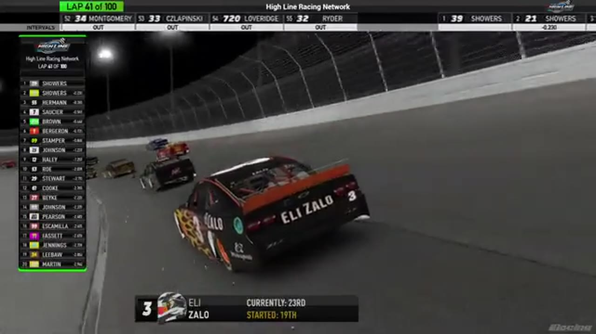

Eli Zallo
Team assignment not stated in the structured owner record.
AN OFFICIAL-TAPE FOOTPRINT, NOT A RESULTS CLAIM
- Official files
- 6
- Central editions
- 0
- Exact tape cues
- 5
- Accepted podiums
- 0
Eli Zallo appears in 6 official HLRN broadcast files across Season 1. The current result ledger does not assign this driver a supported top-three finish. A consistently stated team affiliation remains open for owner review. The currently indexed source window runs from December 29, 2025 through February 24, 2026.
The primary chapter index supplies 5 direct jump points. No repeat track fingerprint is yet supported. The densest direct-tape categories are restart (2 cues) and incident (2 cues). Those counts describe where the name is easiest to find; they are not fault, pace, or performance grades. A source-attributed car frame is published with its original video and timestamp. That is the current discovery map for Eli Zallo.
Official name signals are used for discovery only. They do not become starts, points, incident counts, or an ability grade. This page is deliberately detailed about the tape and restrained about the unavailable competition record. No Highline Live bonus file is currently attached to this identity. The displayed name is labeled broadcast lower third confirmed; that status remains visible so an owner roster can strengthen or correct the identity without rewriting the evidence trail. Those boundaries define Eli Zallo's public HLRN file.
5 featured race-tape cues
These are discovery routes into complete HLRN broadcasts, not performance grades or inferred results.
- S1 / R13 · RESTART
Nick Bowman and Trevor Haley bring Dover back to green
S1 / R13 at 1:25:58: Nick Bowman, Trevor Haley, Cory Cook, and Eli Zallo are in the booth's front-pack call as Dover returns to green. The cut keeps the restart launch and the first lap of lane development together.
Dover - S1 / R9 · RESTART
Trevor Haley and Eli Zallo bring Chicagoland back to green
S1 / R9 at 1:39:23: Trevor Haley, Eli Zallo, and Randy Showers are in the booth's front-pack call as Chicagoland returns to green. The cut keeps the restart launch and the first lap of lane development together.
Chicagoland - S1 / R10 · INCIDENT
Eli Zallo and Jerry Bergeron surface in the Kansas caution replay
S1 / R10 at 1:22:34: The caution sequence centers the replay call on Eli Zallo and Jerry Bergeron. This is a source-bounded incident window; it preserves what the booth reviews without assigning unsupported fault.
Kansas - S1 / R10 · INCIDENT
Evan Perry and Eli Zallo surface in the Kansas caution replay
S1 / R10 at 1:23:35: The caution sequence centers the replay call on Evan Perry, Eli Zallo, and Joe Quan. This is a source-bounded incident window; it preserves what the booth reviews without assigning unsupported fault.
Kansas - S1 / R9 · POSTRACE
Trevor Haley and Randy Showers anchor the Chicagoland post-race result review
S1 / R9 at 1:47:47: The reviewed live-race close has passed before this Chicagoland result booth review begins with Trevor Haley, Randy Showers, Tristan Johnson, and Eli Zallo named in the discussion. It remains post-race context, not a new incident, stage, strategy call, finish, or result receipt.
Chicagoland
Verified team history is not consistently stated. No position-specific top-three result is currently accepted. The public spelling has broadcast identity support; an owner roster can still add legal-name, number, and team-history detail.